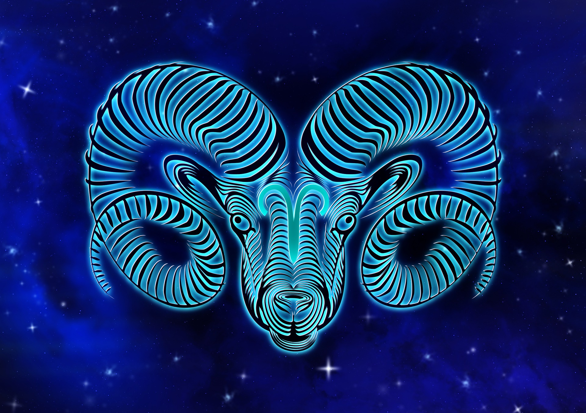

양자리

양자리(라틴어: Aries 아리에스[*])는 황도12궁에 속하는 별자리이다. 동아시아의 별자리에서는 루수와 위수에 해당된다.
신화이야기
그리스 신화에 등장하는 프릭소스(Phrixus)와 헬레(Helle)는 보이오티아의 왕 아타마스(Athamas)와 네펠레(Nephele)의 자녀이다. 왕은 네펠레에게 점점 무관심해지다가 결국 테베의 왕 카드모스(Cadmus)의 딸인 이노(Ino)와 결혼한다. 이노는 네펠레의 아이들을 싫어하여 아이들을 제거하려는 음모를 세운다. 네펠레는 자신의 아이들이 위험에 빠진 것을 알고 신에게 구원의 기도를 하였는데, 전령의 신 헤르메스(Hermes)가 이 기도를 듣고 날개 달린 황금털을 가진 양을 아이들에게 보내어 구하게 하였다. 양은 아이들을 태우고 동쪽 하늘로 날아가는데 유럽과 아시아를 가로지르는 해협을 통과할 때 헬레는 깜빡 잠이 들어 바다로 떨어지게 된다. 그녀가 물에 빠진 해협은 그녀의 이름을 따 헬레스폰토스 해협이라고 불린다. 프릭소스는 양을 죽여 황금털을 벗겨냈는데, 이를 얻기 위해 '아르고호의 원정'이 시작되었다. 그 뒤 제우스는 남매를 태운 황금털의 양을 기념하여 별자리로 만들어 하늘로 올려 보냈다.
그리스 신들이 강가에서 연회를 열고 있을 때에, 괴물 티폰이 나타나, 놀란 신들은 동물로 모습을 바꾸었다. 제우스는 양이 되어 도망쳤는데, 그 모습을 별자리로 만들었다.